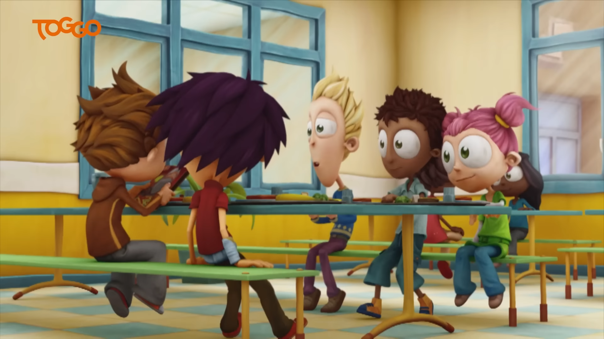
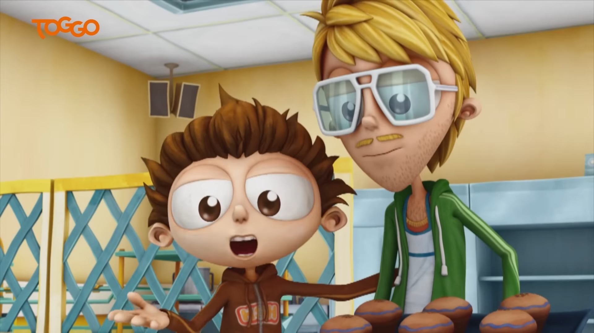
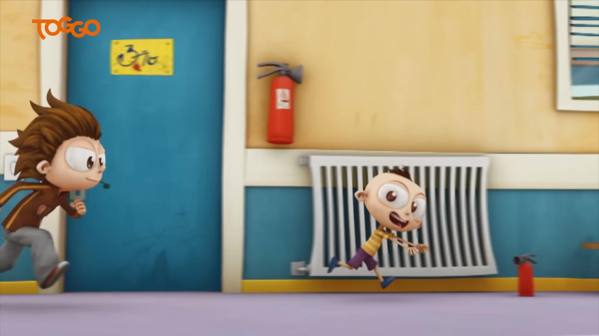
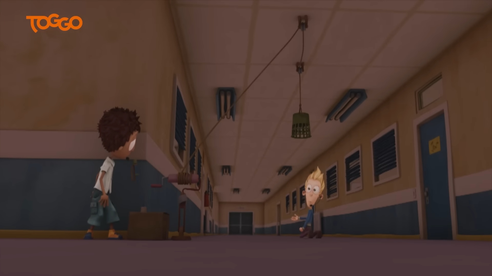

Chaos, Spaß und eine völlig außer Kontrolle geratene Situation!
Angelo, Sherwood und Lola sehnen das Wochenende herbei. Ihnen ist es gelungen, dass sie den Schulcomputer nutzen dürfen, um ihr geliebtes Videospiel „Hai-Alarm“ zu spielen.

Allerdings hat Angelo ganz vergessen, dass er auf seinen kleinen Bruder Peter aufpassen muss.
Die drei versuchen, Peter ruhigzustellen, doch sie übersehen eine wichtige Warnung und geben ihm Süßigkeiten, was dazu führt, dass Peter völlig außer Kontrolle gerät.

Nachdem der Lehrer Schmitty Peter nicht in den Griff bekommt, versuchen die Freunde mit verschiedenen Strategien, ihn zu fangen und zu beruhigen.

Mit Sherwoods Berechnungen und dem Versuch, Peter auszupowern, schaffen sie es, ihn zu beruhigen. Doch aufgrund der fehlenden PC-Leistung können sie das Spiel nicht spielen, was sie jedoch nicht weiter stört.
